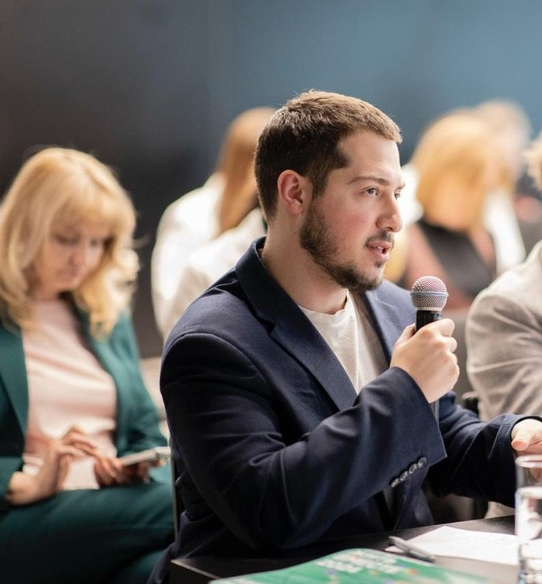
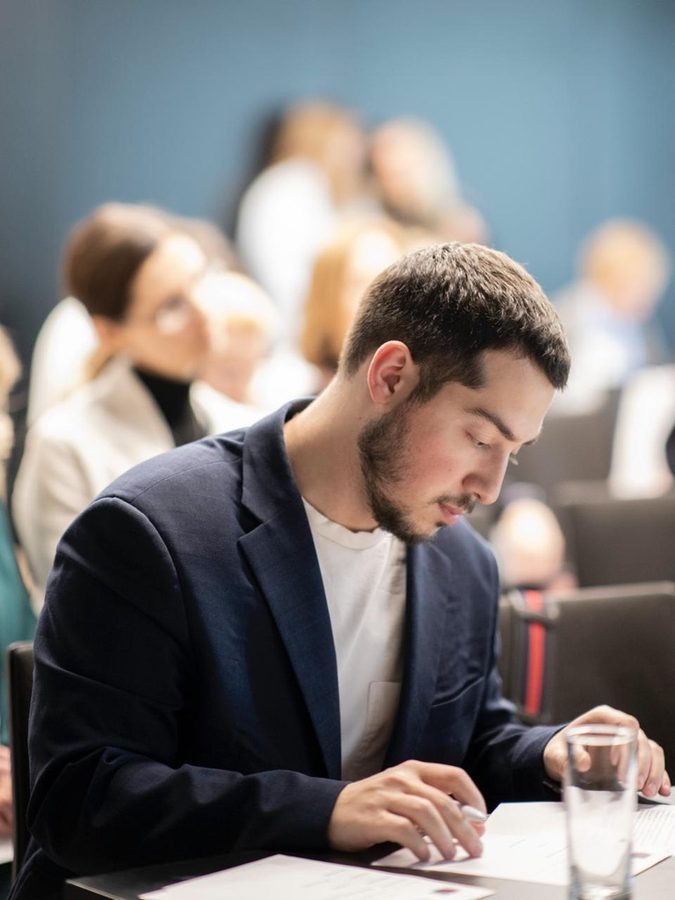
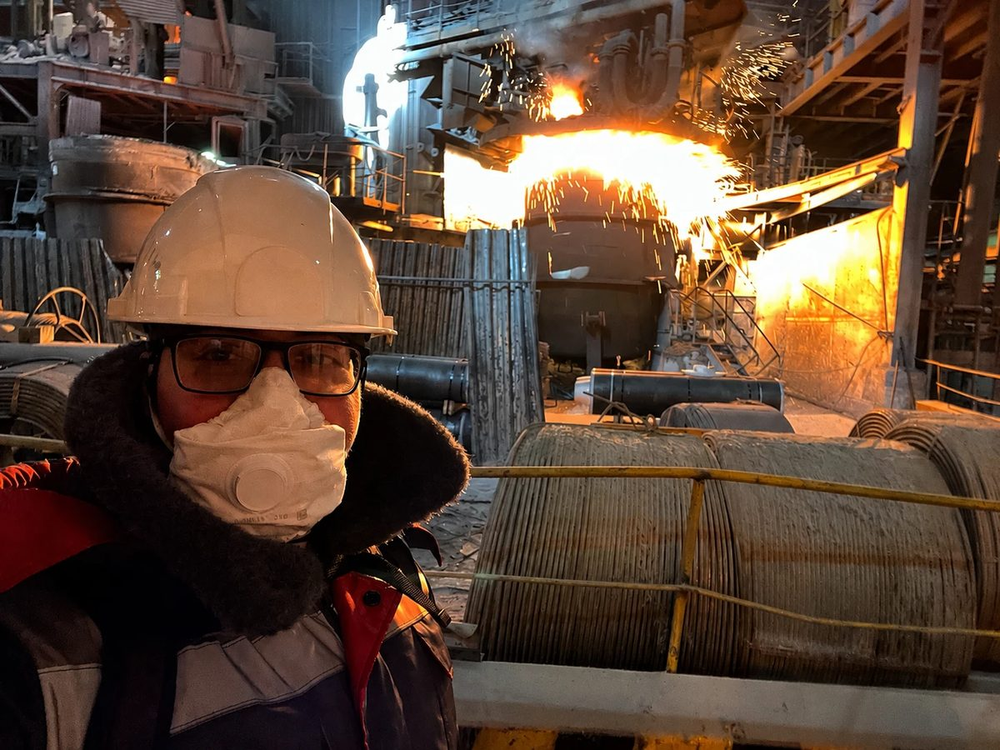
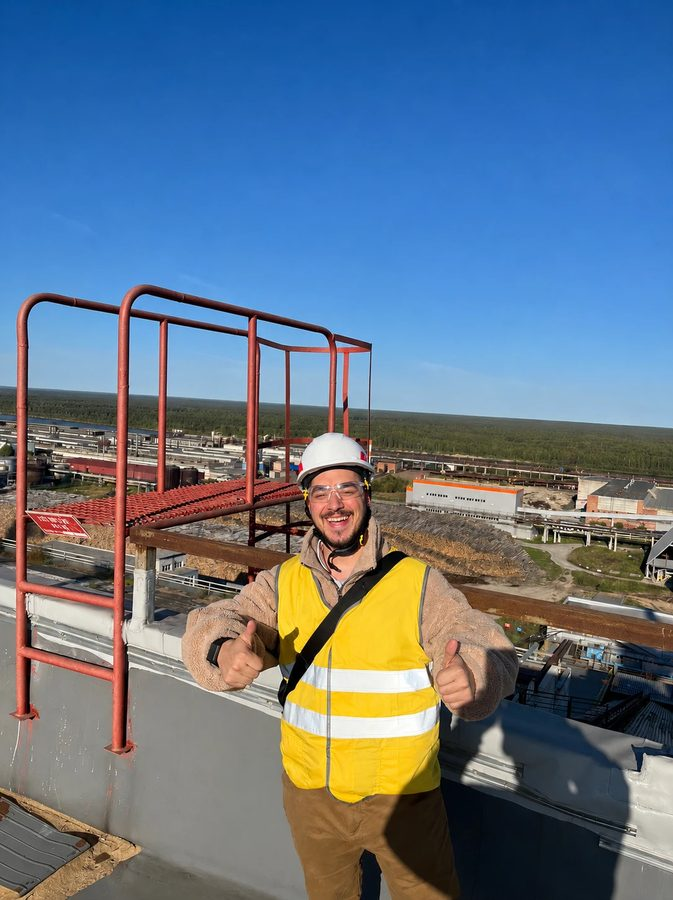

Помогаю принимать решения, от которых зависит стоимость бизнеса
Проверяю сделки, собираю стратегию роста и нахожу резервы выручки и прибыли – с финансовой моделью, планом действий и личным ведением проекта
За 30 минут определим, какое решение нужно принять, каких данных не хватает и какой первый шаг имеет смысл. Если задача не моя – скажу сразу

Начинаем не с названия услуги, а с решения, которое нужно принять
Покупаете или продаёте бизнес
Нужно понять цену, риски, структуру сделки и позицию на переговорах
На выходе: модель сделки, сценарии, коммерческие условия и материалы для решенияСмотреть кейс сделки →Рост упёрся в потолок
Нужно выбрать, куда вкладывать ресурсы и от каких гипотез отказаться
На выходе: приоритеты роста, экономика направлений и дорожная картаСмотреть кейс стратегии →Выручка ниже потенциала
Нужно найти потери в воронке, клиентской базе, покрытии и коммерческих условиях
На выходе: карта потерь, пилот изменений и система показателейСмотреть кейс продаж →Выручка растёт, прибыль – нет
Нужно найти резервы затрат, процессов и численности
На выходе: модель эффектов, владельцы инициатив и план запускаСмотреть практику →Лучше всего работаю, когда есть управленческие данные и один ответственный за решение. Ниже – кейсы по каждой из четырёх задач
Тезисы проходят комитеты, стратегии – советы директоров
Молочный актив в FMCG с проблемной историей – покупать ли и по какой цене
Коммерческая проверка бизнеса, модели сделки и кредита, оценка стоимости синергий
Тезис сделки одобрен инвестиционным и кредитным комитетами
Пятилетняя диверсификация – нужен план, за который проголосуют СД и государство
Офис трансформации с нуля в прямом подчинении гендиректору, 4 стратегические сессии, стратегия диверсификации
Стратегия защищена перед советом директоров и Министром транспорта; 3× EBITDA – её целевой показатель
Коммерческая трансформация – выручка команд росла медленнее возможного
Программа эффективности продаж для 70+ человек, перестройка клиентских баз сегмента
Расчётный потенциал программы – до $30 млн в год: +2,5% выручки от программы и +5% в сегменте от перестройки баз
Компании нужен план кратного роста и ответ на AI-сдвиг рынка
Корпоративная, коммерческая и функциональные стратегии, пересборка продукта под ИИ – с партнёрами ex-McKinsey
Акционеры одобрили целевую модель роста с $24 до $120 млн к 2030
- Сталеплавильный актив $1 млрд: +10% темпа выпуска, расчётный эффект ~$3 млн прибыли
- 10+ проектов эффективности: девелопмент, промышленность, банк из топ-3 РФ
- Модели численности по 7 функциям для топ-1 девелопера РФ
- Рабочий прототип речевой аналитики на 10 000 звонков, мультиагентные ИИ-пайплайны
- Продажи медийной рекламы в Яндексе: расчётный эффект +$2,8 млн в год
Узнали свою ситуацию? Напишите – подскажу, какой из кейсов ближе к вашей задаче
Другие проекты по покупке, продаже и привлечению капитала
Косметический бренд: доля 50%+1, часть цены привязана к будущим результатам
Решение одобрено, сделка не закрытаПродажа бренда инвестору: соглашение о неразглашении, основные условия, корпоративный договор и договор купли-продажи
Документы доведены до проекта договораFashion-бренд на Wildberries: инвестиция в капитал за долю 20% – основные условия, корпоративный договор, финмодель
Структура согласована, сделка в работеПоиск и оценка компаний под мандат покупателя
В активном поиске – текущая работа, не результатКак выглядит материал для решения
Показать ещё 3: тестовые и шаблоны
Здесь нет данных клиентов: учебные и тестовые кейсы, обезличенные шаблоны. Реальные проекты – под NDA, показываю их на созвоне
Четыре направления – когда обращаются, что входит, что на выходе
Стратегия и рост
Куда расти дальше: новые продукты, сегменты и направления – в стратегии для решения собственников или совета директоров
Срок: около 3 месяцевМатериалы и расчёты для решения собственников или совета директоров: целевая модель, экономика направлений, приоритеты и дорожная карта
- Рост упёрся в потолок, непонятно куда дальше
- Гипотез много – плана, за который проголосуют, нет
- Нужен новый продукт или направление, но неясно какое
- Решения о развитии принимаются без цифр
- Корпоративная стратегия
- Продуктовая стратегия и диверсификация
- Запуск новых направлений
- Дорожная карта и каскад целей
Ещё услуги направления
- Функциональные и ИТ-стратегии
- Коммерческая стратегия
- Конкурентный анализ и бенчмаркинг
- Анализ рынка и оценка объёма
- Стратегические сессии и фасилитация
Сделки и M&A
Коммерческая и финансовая часть сделки – от оценки до согласованных условий; юридическую редакцию ведёт профильный специалист
Срок: от 2 недель (оценка) до 3–6 месяцев (полный цикл)Оценка, финансовая модель, сценарии и коммерческая структура сделки – материалы для решения
- Названа цена – проверить её нечем
- Покупка или продажа тянется без структуры
- Документы не отражают договорённости
- К продаже не готовы: нет финмодели, структуры и документов
- Оценка бизнеса: доходный и сравнительный подходы
- Финансовая модель сделки
- Коммерческая проверка бизнеса
- Структурирование: основные условия, договор купли-продажи, корпоративный договор
Ещё услуги направления
- Поиск и отбор целей для покупки
- Инвестиционная записка и обоснование сделки
- Подготовка к продаже: тизер, меморандум, комната данных
- Расчёт синергий и план интеграции
- Поддержка в переговорах
Продажи и выручка
Больше выручки с той же клиентской базы: воронка, покрытие и конверсия под контролем
Типичный срок: 4–8 недельКарта потерь выручки, изменения в базе и воронке, пилот и методика замера эффекта
- Продавцы заняты всем, кроме продаж
- Клиентские базы поделены по привычке
- Конверсия падает, а причины отвала никто не считал
- Решения принимаются по ощущениям, а не по данным воронки
- Диагностика воронки и карта потерь выручки
- Программа эффективности продаж
- Сегментация и перестройка клиентской базы
- Пилот на одном канале с замером эффекта
Ещё услуги направления
- Модель покрытия и нормативы нагрузки
- Коммерческая политика: цены, скидки, условия
- Речевая аналитика звонков и контроль качества
- Показатели и мотивация коммерческого блока
- Панель коммерческих показателей
Операционная эффективность
Больше прибыли без роста выручки: себестоимость, процессы и численность – с ИИ там, где он убирает ручную работу
Типичный срок: 6–12 недельМодель эффектов (база, цель, мероприятия), ответственные и план запуска
- Выручка растёт, прибыль – нет
- Затраты раздуты, где именно – неясно
- Численность росла быстрее задач
- Изменения буксуют без выделенного руководителя
- Диагностика операционной эффективности
- Расчёт целевой численности и нормирование
- Программа снижения затрат
- Модель эффектов: база, цель, мероприятия
Ещё услуги направления
- Оптимизация процессов и оргструктуры
- Офис трансформации и контроль эффектов
- Автоматизация процессов и внедрение ИИ
- Карта применимости ИИ с оценкой эффекта
- Управленческая отчётность и панели
В каждом проекте – расчётная основа и конкретные материалы для решения; их состав зависит от задачи
Не нашли свою задачу? Опишите – предложу, с чего начать
Старт за один созвон, формат – под задачу
Короткое сообщение в Телеграм: чем занимается бизнес, его масштаб и какое решение нужно принять
Конфиденциальный созвон 30 минут: определяем задачу, нужные данные и первый осмысленный шаг
Предложение до старта: объём, материалы, роли, срок и цена зафиксированы
Работа: анализ, модель, рабочие обсуждения и промежуточные решения по согласованному плану
Передача и запуск: финальные материалы, защита решения и согласованный формат поддержки внедрения
Кто ведёт ваш проект

Меня зовут Константин. Отвечаю за постановку задачи, анализ, модель, ключевые выводы и защиту решения. До старта фиксирую объём работ, материалы, сроки и роли
2,5 года в консалтинге – McKinsey CIS и Yakov & Partners (ex-McKinsey CIS). Затем коммерческая трансформация в Яндекс Рекламе и офис трансформации ГЛОНАСС в прямом подчинении генеральному директору. Инженер МГТУ им. Н.Э. Баумана, обучил 300+ сотрудников телеком-компании по своей программе бизнес-анализа
Если задача требует отраслевой, юридической, налоговой или дополнительной аналитической экспертизы – состав и роли специалистов согласуем заранее. У вас остаётся один ответственный – я
Вне работы – тайский бокс и шахматы: голова считает лучше после движения
Работаю там, где создаётся стоимость


Что спрашивают до старта
Когда этот формат подходит, а когда лучше большая фирма
Формат подходит, когда нужен прямой доступ к старшему исполнителю, компактная команда и конкретное управленческое решение. Крупная фирма может быть лучше, если нужна большая международная команда, масштабная полевая работа или бренд консультанта как отдельный фактор решения. Если мой формат не подходит, скажу об этом до старта
Что именно будет результатом работы
Расчётная модель и панель показателей, а не только презентация: оценка или финмодель, сценарии, конкретные выводы и первый шаг. Точный состав материалов фиксируем в предложении до старта
Кто лично выполняет проект
Ядро делаю сам: постановка задачи, анализ, модель, выводы и защита решения. Под масштаб подключаю проверенных специалистов, роли согласуем заранее. Ответственный перед вами один – я
Сколько стоит и от чего зависит цена
Вилка зависит от задачи – называю её по итогам 30-минутного созвона. Цена зависит от объёма, глубины анализа и полноты данных. До старта вы получаете предложение с фиксированной ценой, объёмом работ и сроком
Можно ли начать с небольшой задачи
Да. Первый шаг – разбор на созвоне; дальше короткая диагностика или расчёт по одному вопросу. Большой проект имеет смысл, когда понятно, что он окупается
Что потребуется от вас
Доступ к управленческим цифрам, 3–5 интервью с ключевыми людьми и один ответственный на вашей стороне для решений. Если данные неполные – начинаем с того, что есть, и фиксируем, что нужно собрать
Как обеспечивается конфиденциальность
Соглашение о неразглашении – стандарт. В кейсах названы компании, где я работал в штате; клиентские проекты показаны цифрами без имён. Рекомендации – по запросу, после согласования с клиентом
Кто отвечает за юридическую и налоговую часть сделки
Финансовую и коммерческую часть веду лично: оценка, модель, структура, переговорная позиция. Юридическую и налоговую редакцию готовит и проверяет профильный специалист – привлекаю проверенных
Как измеряется эффект
До старта фиксируем базу и способ замера. Часть эффекта считается сразу в модели (затраты, численность, воронка), часть проявляется после внедрения – её отслеживаем по согласованным показателям. Обещаю метод и расчёт, а не гарантированную цифру
Работаете ли вы как субподрядчик для других консультантов
Да. Подключаюсь субподрядом и закрываю задачу под ключ. Клиент остаётся вашим: напрямую на него не выхожу ни во время проекта, ни после, при необходимости работаю под вашим брендом. Работал в связке с командами ex-McKinsey и ex-EY
Обсудим решение, которое нужно принять
За 30 минут определим, какие данные нужны, что можно проверить быстро и какой первый шаг имеет смысл